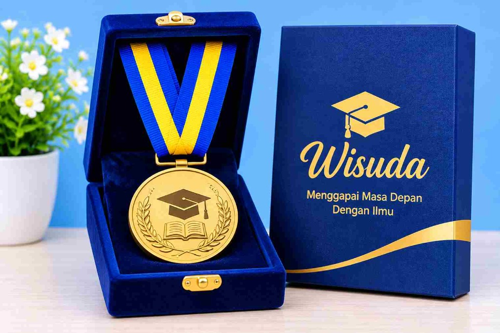

Cara Memilih Boneka Wisuda yang Bagus dan Awet: Panduan Lengkap Sebelum Membeli
Oleh Tim Souvenir Wisuda · Terbit 10 November 2026 · Diperbarui 10 November 2026 · 6 menit baca

Memilih Boneka Wisuda yang Tepat untuk Momen Spesial
Wisuda merupakan salah satu momen penting dalam perjalanan pendidikan seseorang. Setelah melewati berbagai proses belajar, ujian, dan perjuangan panjang, kelulusan menjadi pencapaian yang layak dirayakan dengan hadiah istimewa. Salah satu pilihan hadiah yang banyak diminati adalah boneka wisuda.
Boneka wisuda bukan sekadar hadiah biasa. Dengan desain yang menarik, pakaian toga mini, dan tambahan aksesori kelulusan, boneka ini dapat menjadi simbol kenangan yang menyenangkan bagi wisudawan maupun wisudawati.
Namun, memilih boneka wisuda tidak boleh hanya berdasarkan tampilan luarnya. Kualitas bahan, kelembutan tekstur, kerapian jahitan, kekuatan isian, hingga ketahanan warna merupakan beberapa hal yang perlu diperhatikan agar boneka tetap bagus dan awet meskipun disimpan dalam waktu lama.
Lalu, bagaimana cara memilih boneka wisuda yang bagus dan tidak mudah rusak? Artikel ini akan membahas panduan lengkap agar Anda bisa mendapatkan boneka wisuda berkualitas, menarik, dan sesuai dengan kebutuhan.
1. Perhatikan Kualitas Bahan Boneka Wisuda
Hal pertama yang perlu diperhatikan ketika memilih boneka wisuda adalah kualitas bahan yang digunakan. Bahan menjadi salah satu faktor utama yang menentukan kenyamanan, kelembutan, dan daya tahan boneka.
Boneka dengan bahan berkualitas biasanya memiliki tekstur yang lembut, tidak mudah berbulu, serta nyaman ketika disentuh. Beberapa jenis bahan yang sering digunakan antara lain:
a. Bahan Velboa
Velboa merupakan salah satu bahan yang cukup populer untuk pembuatan boneka. Teksturnya lembut, memiliki bulu pendek, dan memberikan tampilan yang rapi.
- Permukaannya lembut dan nyaman disentuh.
- Bulu relatif pendek sehingga terlihat rapi.
- Cocok untuk berbagai bentuk dan desain boneka.
- Memiliki pilihan warna yang beragam.
b. Bahan Yelvo
Yelvo dikenal memiliki tekstur yang sangat lembut dan halus. Bahan ini dapat memberikan kesan boneka yang lebih nyaman dan premium.
- Tekstur terasa halus dan elastis.
- Sangat cocok untuk boneka dengan desain karakter.
- Memberikan tampilan mewah dan menarik.
- Nyaman dan aman dijadikan hadiah wisuda.
c. Bahan Rasfur
Rasfur mempunyai karakteristik bulu yang lebih panjang dibandingkan beberapa bahan boneka lainnya. Teksturnya memberikan kesan fluffy atau mengembang.
Bahan ini cocok untuk boneka wisuda beruang (teddy bear) yang ingin memiliki tampilan lebih menggemaskan.
Tips: Sebelum membeli, sentuh permukaan boneka dan periksa apakah bahannya terasa nyaman, tidak mudah rontok, serta tidak memiliki bau kimia yang mengganggu.
2. Pilih Boneka dengan Jahitan yang Rapi dan Kuat
Selain bahan, kualitas jahitan juga menjadi faktor penting dalam menentukan keawetan boneka wisuda. Boneka dengan jahitan yang kurang rapi berisiko mengalami kerusakan, terutama pada bagian tangan, kaki, kepala, dan sambungan tubuh.
Perhatikan beberapa bagian berikut:
- Jahitan kepala: Pastikan sambungan kepala dan badan terlihat kuat serta presisi.
- Jahitan tangan dan kaki: Periksa apakah bagian tersebut terpasang dengan baik dan simetris.
- Jahitan pakaian toga: Pastikan pakaian wisuda tidak mudah terlepas atau robek.
- Jahitan aksesori: Periksa detail tambahan seperti topi toga, pita, dan selempang bordir.
Jahitan yang kuat membantu boneka mempertahankan bentuknya dan mengurangi risiko kerusakan ketika sering dipindahkan atau digunakan sebagai pajangan.
3. Periksa Kualitas Isian Boneka
Isian boneka juga berpengaruh terhadap bentuk dan kenyamanan produk. Boneka yang bagus sebaiknya memiliki isian yang merata sehingga tidak terlihat kempis atau menggumpal.
Beberapa hal yang perlu diperhatikan:
- Tekan bagian tubuh boneka secara perlahan untuk mengetahui kepadatan isiannya.
- Pastikan kepala tidak mudah berubah bentuk setelah ditekan.
- Periksa bagian tangan dan kaki agar tidak terasa kosong.
- Pastikan seluruh bagian terisi secara proporsional.
Salah satu bahan isian terbaik yang sering digunakan adalah dakron silicon grade A. Dakron berkualitas baik dapat membantu boneka terasa empuk, membal, dan mampu mempertahankan bentuk aslinya bertahun-tahun. Hindari memilih boneka yang terlalu keras ataupun terlalu kempes.
4. Pilih Desain Toga yang Menarik dan Detail
Ciri khas boneka wisuda adalah penggunaan pakaian toga yang menggambarkan suasana kelulusan. Oleh karena itu, desain toga menjadi salah satu elemen yang membuat hadiah ini terlihat istimewa.
Sebelum membeli, perhatikan detail penting berikut:
- Warna toga terlihat sesuai dengan universitas dan tidak mudah luntur.
- Topi wisuda terpasang dengan rapi dan kokoh.
- Selempang memiliki bordir nama dan gelar yang terbaca jelas.
- Jahitan pakaian terlihat kuat dan rapi.
- Ukuran pakaian pas proporsional dengan tubuh boneka.
Anda juga dapat memilih boneka dengan tambahan aksesori seperti miniatur ijazah gulung, medali logam, buket bunga mini, atau kartu ucapan selamat wisuda.
5. Sesuaikan Ukuran Boneka dengan Kebutuhan
Ukuran boneka wisuda perlu disesuaikan dengan tujuan pembelian. Setiap ukuran memiliki keunggulan tersendiri, baik untuk hadiah pribadi maupun souvenir acara.
| Ukuran | Tinggi Rata-rata | Kegunaan Utama |
|---|---|---|
| Kecil | 15 – 20 cm | Souvenir massal panitia acara, hadiah teman sekelas, kado hemat budget |
| Sedang | 25 – 35 cm | Hadiah utama untuk sahabat, keluarga, atau pasangan (ukuran paling ideal difoto) |
| Besar | 40 – 50 cm | Hadiah spesial, pajangan meja kamar tidur atau ruang tamu |
| Jumbo | > 60 cm | Hadiah kejutan utama dengan tampilan yang sangat mencolok dan berkesan |
Jika ingin memberikan boneka sebagai hadiah wisuda pribadi, ukuran sedang hingga besar bisa menjadi pilihan paling pas karena proporsional saat diajak berfoto di podium kelulusan.
6. Pilih Boneka Wisuda dengan Warna yang Tidak Mudah Pudar
Warna merupakan salah satu daya tarik utama boneka wisuda. Kombinasi warna yang tepat dapat membuat boneka terlihat lebih menarik dan elegan.
Beberapa warna favorit yang sering digunakan antara lain:
- Hitam: Memberikan kesan klasik, sakral, dan formal seperti jubah toga asli.
- Biru Navy: Memberikan tampilan modern, cerdas, dan elegan.
- Merah Marun: Menghadirkan kesan mewah, tegas, dan bersemangat.
- Putih / Krem: Tampilan bersih, manis, dan netral.
- Pink Pastel: Pilihan manis dan menggemaskan untuk wisudawati.
Periksa kualitas pewarnaan kain dan pastikan tidak terdapat noda atau bagian belang sebelum membeli.
7. Pertimbangkan Boneka Wisuda Custom agar Lebih Personal
Jika ingin memberikan hadiah yang lebih berkesan, boneka wisuda custom adalah pilihan terbaik. Fitur custom memungkinkan pembeli menambahkan detail personal yang tidak ditemukan di toko biasa.
Beberapa ide kustomisasi favorit:
- Bordir nama lengkap wisudawan beserta gelar resmi (contoh: S.Kom, S.E, M.M).
- Warna kerah toga dan kalung samir yang disesuaikan persis dengan fakultas atau universitas.
- Pin atau logo kampus di bagian dada atau topi toga.
- Miniatur ijazah gulung dengan pita emas.
- Kotak kemasan mika atau hardbox eksklusif berpita.
8. Perhatikan Kebersihan dan Keamanan Boneka
Boneka wisuda berkualitas harus higienis dan aman bagi siapapun, termasuk mereka yang memiliki kulit sensitif atau alergi debu:
- Tidak memiliki bau kimia atau lem yang menyengat.
- Tidak terdapat kawat tajam atau bagian keras yang mencuat.
- Aksesori kancing dan mata boneka terpasang kuat agar tidak mudah lepas.
- Serat kain tidak mudah rontok atau berhamburan.
9. Pilih Penjual Boneka Wisuda yang Terpercaya
Jangan hanya tergiur harga murah tanpa memperhatikan reputasi toko. Untuk memastikan kualitas boneka:
- Periksa portofolio foto produk asli pesanan sebelumnya, bukan sekadar foto ilustrasi internet.
- Baca ulasan atau testimoni dari pelanggan lain.
- Tanyakan kepastian bahan kain dan jenis isian yang digunakan.
- Pastikan waktu pengerjaan dan estimasi tiba sesuai dengan jadwal wisuda Anda.
- Pilih penyedia yang memiliki layanan customer care responsif via WhatsApp.
10. Ketahui Cara Merawat Boneka Wisuda agar Tetap Awet
Merawat boneka wisuda dengan benar akan membuatnya bertahan bertahun-tahun sebagai memorabilia kelulusan yang indah:
a. Bersihkan Debu Secara Rutin
Gunakan kain microfiber bersih, sikat berbulu halus, atau penyedot debu berdaya rendah untuk mengangkat debu di sela-sela baju toga.
b. Hindari Mencuci Sembarangan
Jangan memasukkan boneka toga ke dalam mesin cuci karena dapat merusak bentuk topi toga dan ornamen miniatur ijazah. Bersihkan noda ringan dengan lap lembap yang diberi sedikit sabun lembut.
c. Keringkan dengan Benar
Angin-anginkan di tempat teduh dengan sirkulasi udara baik. Hindari menjemur di bawah terik matahari langsung agar warna kain toga tidak cepat pudar.
d. Simpan di Tempat Kering atau Kotak Mika
Simpan di etalase kaca atau biarkan berada di dalam kotak mika transparan agar terbebas dari debu dan kelembapan ruangan.
11. Sesuaikan Harga dengan Kualitas Boneka Wisuda
Harga boneka wisuda sangat bervariasi bergantung pada ukuran, bahan bulu, tingkat kerumitan jahitan toga, serta detail bordir nama. Bandingkan spesifikasi produk dengan seksama agar Anda mendapatkan produk bernilai terbaik (value for money).
12. Pilih Kemasan yang Menarik untuk Hadiah Wisuda
Kemasan yang rapi dan elegan akan langsung melipatgandakan kesan eksklusif dari kado wisuda Anda. Anda dapat memilih kemasan kotak mika transparan berpita, paper bag premium, atau gift box eksklusif lengkap dengan kartu ucapan selamat.

Kesalahan yang Harus Dihindari Saat Membeli Boneka Wisuda
- Hanya tergiur harga murah: Boneka dengan harga di bawah standar seringkali menggunakan kain kasar dan jahitan rapuh.
- Tidak memastikan kesesuaian toga kampus: Warna samir atau model toga yang salah bisa mengurangi rasa bangga wisudawan saat menerima hadiah.
- Memesan terlalu mepet hari H: Proses kustomisasi bordir nama membutuhkan ketelitian, sehingga pesanlah minimal 1 hingga 2 minggu sebelumnya.
FAQ: Pertanyaan Seputar Boneka Wisuda
1. Boneka wisuda yang bagus terbuat dari bahan apa?
Bahan velboa dan yelvo adalah pilihan terbaik karena memiliki tekstur sangat halus, bulu pendek yang rapi, dan tidak mudah berbulu atau rontok.
2. Bagaimana cara mengetahui boneka wisuda berkualitas?
Periksa kelembutan bahan, kerapian jahitan sambungan, kepadatan isian dakron yang empuk merata, serta kekuatan topi dan aksesori toga.
3. Apakah boneka wisuda bisa dibuat custom?
Ya, kami melayani custom bordir nama lengkap wisudawan beserta gelar, warna kerah toga sesuai kampus, dan logo universitas resmi.
4. Bagaimana cara mencuci boneka wisuda?
Cukup bersihkan permukaan yang kotor dengan kain lembap lembut dan sabun bayi, lalu angin-anginkan hingga kering. Hindari mesin cuci.
5. Berapa ukuran boneka wisuda yang cocok untuk hadiah?
Ukuran sedang (25-35 cm) adalah yang paling ideal karena sangat nyaman dipegang dan terlihat proporsional saat sesi foto wisuda.
6. Apakah boneka wisuda cocok dijadikan kenang-kenangan?
Sangat cocok. Dengan bahan berkualitas, boneka ini bisa disimpan puluhan tahun sebagai pengingat perjuangan meraih gelar sarjana.
7. Apa yang membuat boneka wisuda terlihat lebih eksklusif?
Kombinasi bahan premium (yelvo), bordir nama yang rapi dan berkilau, detail toga kampus yang akurat, serta kemasan kotak mika berpita emas.
Kesimpulan: Pilih Boneka Wisuda Berkualitas untuk Kenangan yang Lebih Berkesan
Memilih boneka wisuda yang bagus dan awet membutuhkan perhatian terhadap beberapa aspek: mulai dari kualitas bahan, kerapian jahitan, kepadatan isian, detail desain toga, hingga kemasannya.
Hadiah terbaik bukan hanya tentang bentuk atau harganya, melainkan tentang perhatian, kebanggaan, dan doa mendalam yang ingin Anda sampaikan kepada sahabat, keluarga, atau pasangan yang telah berhasil menyelesaikan perjalanan pendidikannya.
Pesan Boneka Wisuda Custom
Dapatkan Boneka Wisuda Custom Berkualitas Terbaik
Pesan boneka wisuda dengan toga kampus impian, lengkap dengan bordir nama dan gelar kelulusan. Pengerjaan cepat, jahitan rapi, dan siap kirim ke seluruh kota di Indonesia.